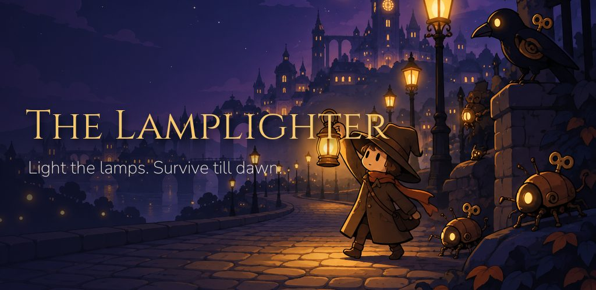

From the same world
How The Lamplighter fits into the BlairsLab world and what you may notice from the other games.
On this page
Note The Lamplighter is in closed testing, so details here may change.
The Lamplighter is set in the Evenwold, the small country shared by every BlairsLab game. You do not need any other game to play it.
Your corner of the world
The game follows a long road, lit lamp by lamp, towards the city wall. The Rust comes out after dark where time has been left alone. See The lamplighter and the world and The Rust.
The lantern moth
The moth appears in every BlairsLab game. Here it flares once a night to save you. It is never a weapon, and nothing bad happens to it while you are away.
Other lamps and towers
The lamp on the road and the great clock tower in Hivewright are different towers.
The other games
- Hivewright: a hive of wind-ups climbs a stopped clock tower.
- The Last Bell: a valley of stopped clocks and one bell.
- The Last Second Workshop: a workshop in Meridia, held at the last second.
- The Belfry Gun: a hill town's wall (in testing).
- The Roads Between: small towns on the back roads (closed testing).
Start at the BlairsLab universe for the shared rules. No game rewards you for owning another.